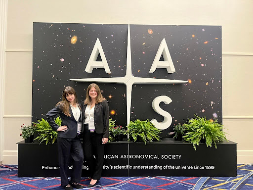
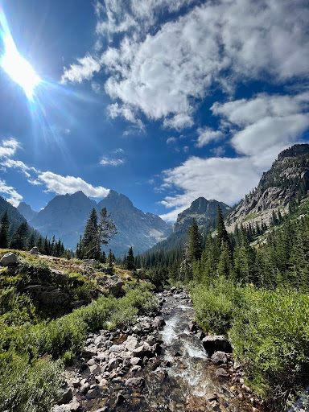
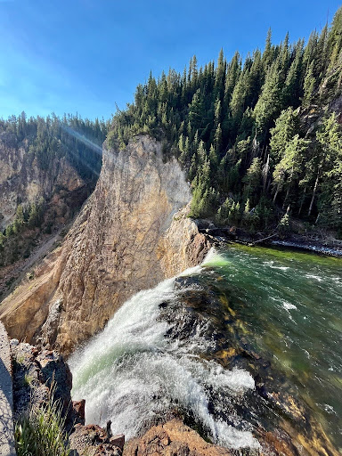
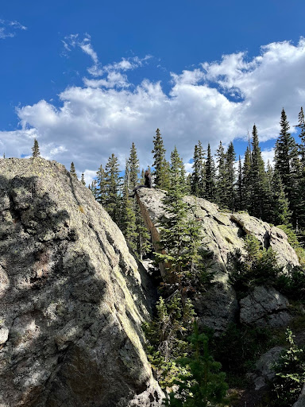
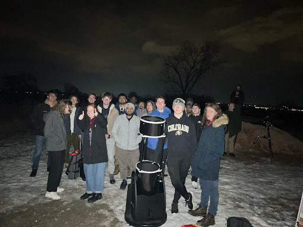

Hello, I am a 4th-year undergraduate student in the Astrophysical and Planetary Sciences department at the University of Colorado Boulder. Throughout my time at the University of Colorado Boulder, I have been committed to astrophysical research in multiple subfields, and I have been heavily involved in teaching and outreach. I am spending my Fall semester applying to graduate schools. If you would like to discuss graduate or research opportunities, feel free to contact me: adalyn [dot] gibson [at] colorado [dot] edu

The 245th AAS meeting in National Harbor, Maryland.
When I'm not doing astronomy, I like to spend as much time outside as possible, hiking, paddleboarding, or swimming.

Grand Tetons National Park.

Yellowstone National Park.

Research Highlights
ORCID |
ADS
I am interested in pursuing further research on the impact of stellar activity on planet formation and habitability, as well as the characterization and modeling of exoplanet atmospheres. My goal is to pursue research that bridges my knowledge of stellar activity and astrobiology, exploring how stellar phenomena impact the atmospheres of exoplanets. I intend to pursue further complementary modeling and observational astronomy.
Probing Non-Thermal Processes in Stellar Flares
In my second year, I expanded my research horizons to include stellar flare physics, something I was not expecting to love as much as I do. I fell in love with flares and would like to pursue research on stellar activity in the future, especially in the context of exoplanet atmospheres. In this research, conducted under the guidance of Dr. Adam Kowalski and Dr. Adina Feinstein, I utilized Hubble Space Telescope/Cosmic Origins Spectrograph observations of the young M-dwarf AU Mic to characterize its stellar flare atmosphere, with the initial goal of searching for non-thermal proton beams during flares. I identified, modeled, and calculated the properties of the observed flares and compared my findings with those in the literature. In my research, I worked with stellar flare models and explored the current successes and failures of these models. I also discussed in depth the effects of stellar flaring on exoplanet atmospheres and habitability. I presented my research via an iposter presentation at the 245th American Astronomical Society meeting, as well as the 2025 Conference for Undergraduate Women and Gender Minorities in Physics and the 2025 CU Boulder Undergraduate Research Expo. This research served as the subject of my undergraduate Latin honors thesis, completed in my third year, and I received the honors designation of Magna Cum Laude; I published this research in the CU honors journal. On arXiv now! Submitted to The Astrophysical Journal Letters.
arXiv:2506.10201
TESS Photometry of Extreme Debris Disk RZ Psc
In my first semester at the University of Colorado Boulder, I was accepted into the STEM Routes Uplift program, which places underrepresented undergraduate students with research advisors to pursue undergraduate research. In this program, I attended weekly workshops on technical research skills and learned essential research skills through hands-on training and my research project. I was paired with Dr. Meredith MacGregor as my research advisor and conducted a study searching for exocomets in extreme debris disks using observations from The Transiting Exoplanet Survey Satellite. After presenting my final project for the Uplift program, I continued my research with Dr. Meredith MacGregor and Dr. Ward Howard on exocomets. I was awarded two Undergraduate Research Opportunity grants to pursue this research. I presented this research at the 2024 Conference for Undergraduate Women and Gender Minorities in Physics and the 2024 CU Boulder Undergraduate Research Expo. I detected 19 exocomets in the extreme debris disk around RZ Psc. I modeled these exocomets and calculated their properties, comparing them to populations found in other systems and our solar system, and analyzed the potential of exocomet science in the context of habitable planet formation. I got experience modeling, characterizing, and removing stellar variability through Gaussian Process modeling.
Atmospheric Characterization
.....
Outreach and Teaching
CU Astronomy Club
I am the Social Media Content Lead for the CU Astronomy Club.
CUAC Website

Teaching
Learning Assistant for ASTR 2600 - Introduction to Scientific Programming.
Grader for ASTR 2600 - Introduction to Scientific Programming.
Grader for ASTR 1010 - Introductory Astronomy: The Solar System w/Lab.
Contact
If you would like to discuss anything mentioned on the website feel free to contact me:
.heic.png)